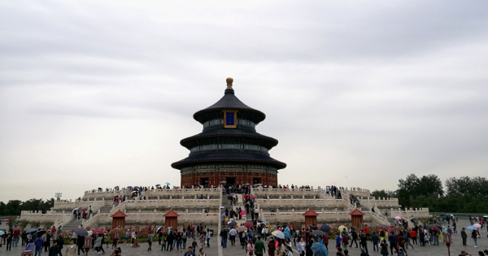
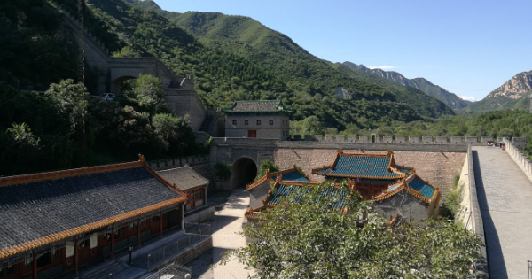
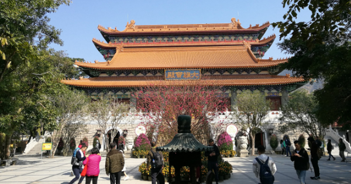

Beijing - A city full of fascinating History
-
Short Author Info
I love travelling, and with my work as a project manager on site on various sport events this was a great way to get out and discover awesome places.
If you'd like to learn more about me you can head over to ABOUT ME. -
My first visit
The first time I visited Beijing was also my first time beeing in China.
And one can imagine that the influx of new experiences was quite something.
I was in Asia before, but for the cultural experience visiting Beijing had a lot of impact.
As with other cities of empires long gone, like Paris, London and Vienna, the city of Beijing just breathes history.
And adding the rapid growth and change all around the cities of china, is makes for a something very interesting to see. -
The most important sights
The must have seen list
The Temple of Heaven
For me this sight left the biggest impression upon seeing it. Located in southern Dongcheng District, upon arriving the whole park sourrounding it is already a treat, but standing in front of the Hall of Prayer for Good Harvests you can get a feeling for the rich history that is there to explore and experience.
For me this Temple with the sourrounding area is, with a tiny margin, the most impressive sight in Beijing.The Summer Palace
Wheras the Temple of Heaven left a lasting impression mainly because of the Hall of Prayer for Good Harvests, the Summer Palace suprises with the expanse of the area.
It is part of the UNSECO World Heritage List, who declared the Summer Palace to bea masterpiece of Chinese landscape garden design. The natural landscape of hills and open water is combined with artificial features such as pavilions, halls, palaces, temples and bridges to form a harmonious ensemble of outstanding aesthetic value
The should have seen list
The Jigshan Park

Located just above the Forbidden City it is a great destination to continue as you walk through the exit of the Forbidden City.
It will offer a great view over the city, and during the sunset it will attract a great crowd to see the sun go down over the Temple of the White Pagoda.The Forbidden City
The Forbidden City is one of the sights most talked about, but to be honest did not fascinate me as much as perhaps others. You have to be lucky to not be drowned in people, and with the one-way-street design you can feel a bit herded.
It is a impressive structure for sure, with the size and grandure leaving one thinking of a time when it was in use and not a tourist attraction. But for me seeing it three times by now does not necessitate a repeat.